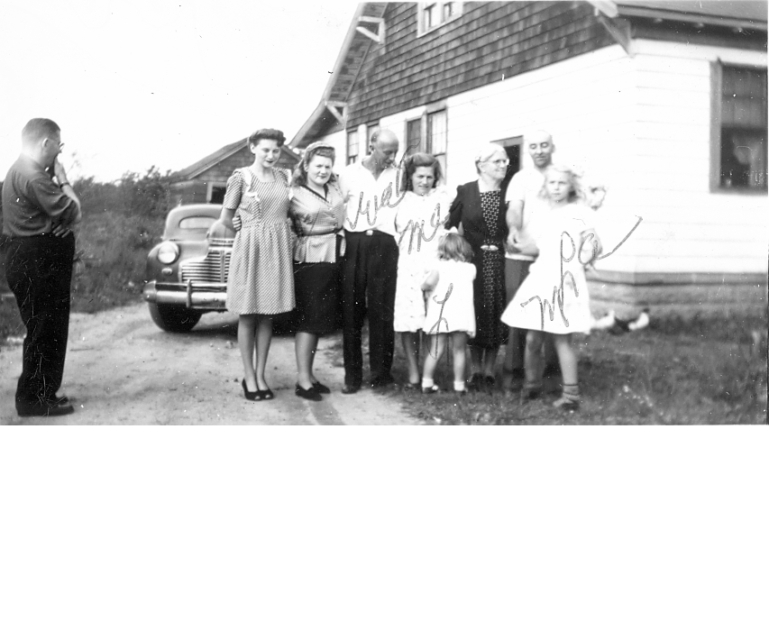
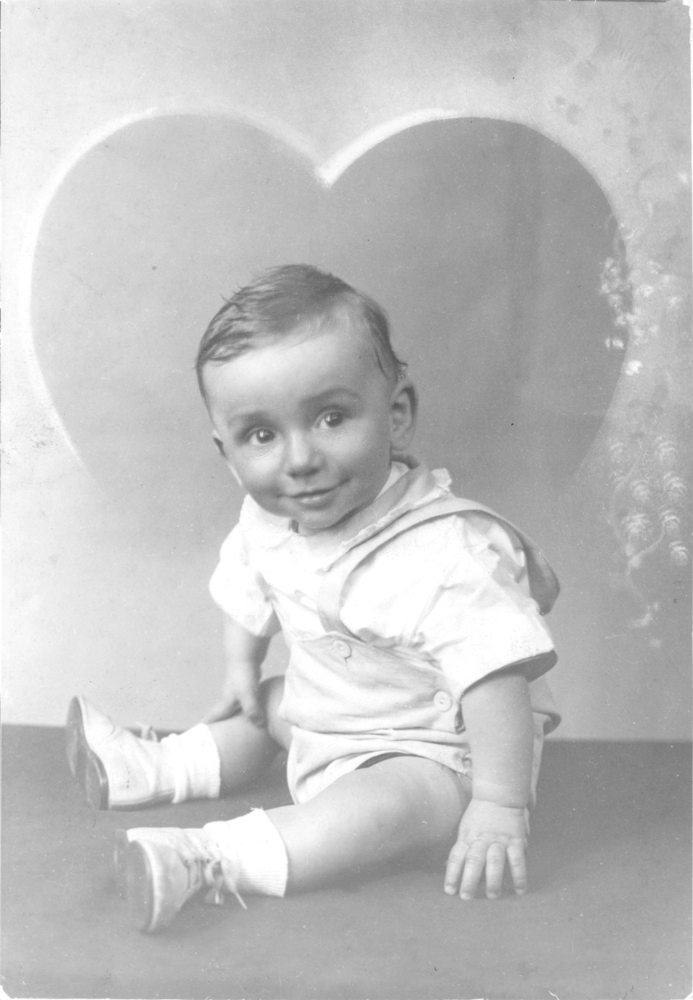
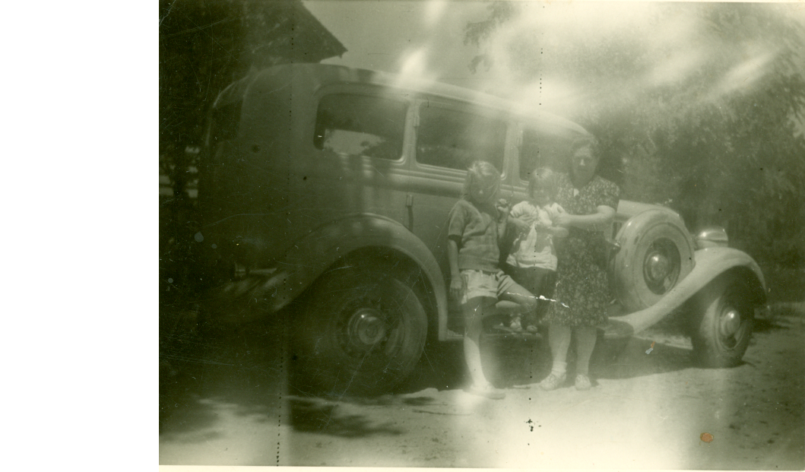
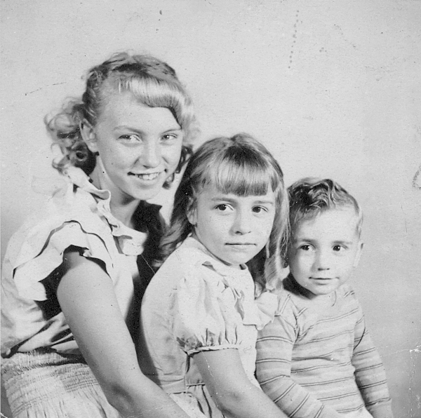
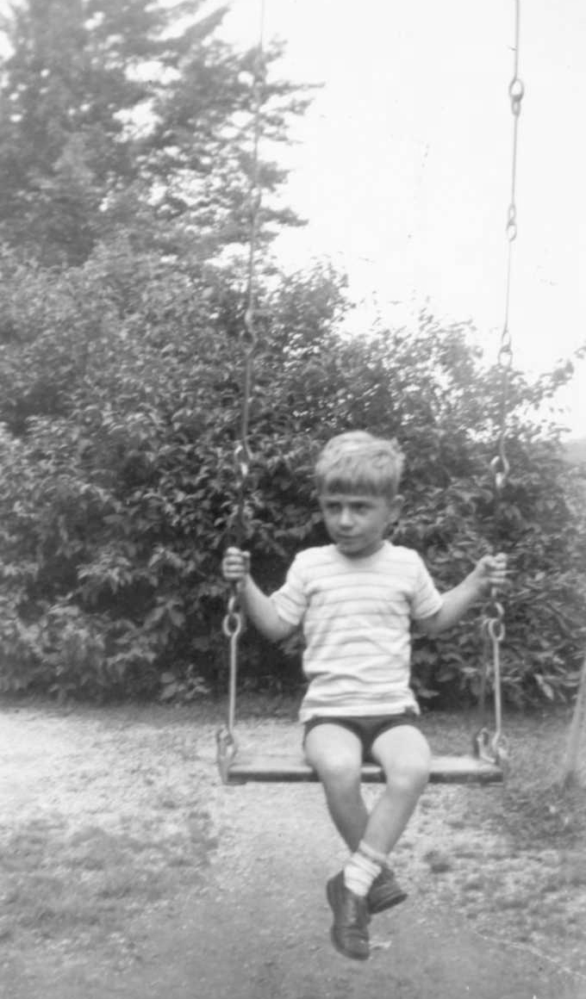

A place for family to share photos. Just right click and choose "save" on any photo you'd like a copy of.
George's Confirmation, 1946. Far left is George's Grandmother, Susan Johnson Dinsdale (back to camera). Far right is Aunt Edith, woman talking to her is George's mother's youngest sister, Grace Dinsdale Miller, and the man is probably her husband, John Miller. Behind Grace is Aunt Clare's husband, Mr. Plenge. Next to Grace is George's mother, Sara Louise Dinsdale Allen, next to her is George's Grandfather Robert Dinsdale, left of him is a neighbor, Mrs. Wassel.

George's Confirmation, 1946, L-R: John Miller (?), Aunt Tippy, Aunt Grace, Uncle Walt, Sara Louise Dinsdale Allen, Lorraine with back to camera, Edith Winkelseth, George's Dad, MaryLou

George at 7 months old, 1947

MaryLou, Lorraine, and Sara Louise with a car they loved

Mary Lou, Lori, and George

Tiny George